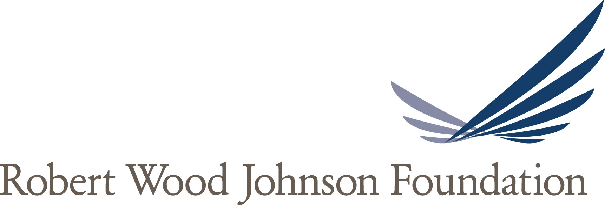

Webinar Spotlight

Webinar date: June 16, 2016
Who 'owns' your nonprofit? The line defining the governance responsibility of board and staff is often hard to see. This fast-paced webinar will help to clarify that line using a football metaphor that everyone can understand. You've seen that yellow line that appears on the screen when you watch a football game. When you apply that line to the key roles of board and staff, it provides an easy way to discuss governance roles and helps to open lines of communication so both teams work compatibly toward the same goal - serving your organization's mission. Jean Block, the webinar presenter, is the author of "The Invisible Yellow Line™ – Clarifying Board and Staff Roles." She will share easy, practical examples of best practices in board and staff roles in governance, including the board's responsibilities to the Three Duties and how the CEO can support the board in its governance role. The webinar is a great basic review for the novice and a refresher for the experienced nonprofit volunteer or chief executive.
GrantStation's CEO Cynthia Adams speaks of trends and the related tools she is seeing in the world of philanthropy. This week we talk with our CEO, Cynthia Adams, about Impact Investing, a topic that will be covered at Innovations 2016: A GrantStation Forum on Philanthropy.
July 16, 2016

The Robert Wood Johnson Foundation is issuing two calls for proposals for the Costs of Care: Getting the Patient-Provider Conversation Right initiative to support cost-of-care conversations in clinical encounters across different vulnerable patient populations, care settings, and geographic areas. Click above to learn more about the funding guidelines and application process.
This is a sample of the thousands of searchable grantmaker profiles available to Members!
Regional Funding Alert
July 16, 2016
The Open Society Foundations work to build vibrant and tolerant democracies whose governments are accountable and open to the participation of all people. The Civil Society Fund for Roma Integration 2020 provides support to civil society networks and coalitions in selected countries to contribute to the fulfillment of the commitments made by national governments within Roma Integration 2020. Click above to learn more about the funding guidelines.
This is a sample of the thousands of searchable grantmaker profiles available to Members!
Federal Funding Alert
July 16, 2016

The Domestic Victims of Human Trafficking Program supports projects that will develop, expand, and strengthen comprehensive services for victims. Letters of intent are due July 22, 2016. The application deadline is August 24, 2016.
This is a sample of the thousands of searchable grantmaker profiles available to Members!
International Funding Alert
July 16, 2016
The European Outdoor Conservation Association seeks to support valuable conservation work and promote care and respect for wild places. The Association provides grants of up to €30,000 to implement a conservation project in any country around the world, except North America.
This is a sample of the thousands of searchable grantmaker profiles available to Members!
Online Education
Live Webinars
FREE Tour of the GrantStation Website
6/21/2016
Logic Models: More than Just Extra Work!
7/26/2016
How to Craft a Proposal to a Foundation
7/28/2016
Video Learning Library
Title
Length
Price